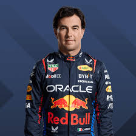

Pilotos

Max Emilian Verstappen (pronunciación en neerlandés: /ˈmɑks vɛrˈstɑ.pə(n)/; Hasselt, 30 de septiembre de 1997) es un piloto de automovilismo neerlandés.4 Ganó el Campeonato Mundial de Karting en 2013 y fue tercero del Campeonato Europeo de Fórmula 3 de la FIA en su debut en monoplazas. Desde 2015 compite en Fórmula 1, debutando en la escudería Toro Rosso. A partir de 2016 lo hace en el equipo Red Bull Racing, obteniendo dos terceros puestos en 2019 y 2020, y resultando tricampeón del Campeonato Mundial de Fórmula 1 con los títulos obtenidos en 2021, 2022 y 2023.5 Max Verstappen es el tercer piloto con mayor número de victorias en la historia de la categoría con 61 grandes premios ganados, el cuarto con más podios: 109, el quinto con más pole position: 40, el sexto con más vueltas rápidas: 32, y el tercero con más Grand Chelem igualado con Alberto Ascari y Michael Schumacher: 5. El 3 de octubre de 2014, siendo piloto de reserva de la escudería Toro Rosso, formó parte en la primera sesión de entrenamientos libres del Gran Premio de Japón de 2014,6con 17 años y tres días, de esa forma fue la persona más joven en la historia de la Fórmula 1 en participar en un fin de semana de carreras. Posee varios récords como el piloto más joven de la Fórmula 1: (1) Competir en un Gran Premio, hizo su debut con 17 años y 166 días en el Gran Premio de Australia de 2015 con la Scuderia Toro Rosso.7(2) Sumar puntos en el Gran Premio de Malasia de 2015 con 17 años y 180 días. (3) Ganar un Gran Premio. (4) Subir al podio. (5) Liderar una vuelta durante un Gran Premio. Los récords mencionados en los puntos 3, 4 y 5 fueron logrados teniendo 18 años, 7 meses y 15 días en el Gran Premio de España de 2016.8 (6) Vuelta más rápida en el Gran Premio de Brasil de 2016 con 19 años y 44 días. (7) Récord de vuelta en una sesión, esta fue en el tercera práctica libre en el Autódromo Hermanos Rodríguez (México) el 28 de octubre de 2017. (8) En el Gran Premio de Austria de 2021 después de 128 grandes premios, 50 podios y 15 victorias, consiguió su primer Grand Chelem con 23 años, 9 meses y 4 días.9 (9) Obtener 100 podios con 26 años, 5 meses y 9 días en el Gran Premio de Arabia Saudita de 2024.1011 Fue el primer ganador en la historia de una carrera sprint, clasificatoria para el Gran Premio de Gran Bretaña de 2021.12 Ese año se proclamó campeón de Fórmula 1 tras ganar en el Gran Premio de Abu Dabi; última carrera de la temporada; derrotando al defensor del título Lewis Hamilton en la vuelta final, con quien había llegado empatado en puntos. De esta forma, también se convirtió en el primer neerlandés en obtener el título.13 Dicha temporada fue catalogada casi en forma unánime, como una de las mejores en la historia de la categoría.14 En 2023 logró dos récords con respecto a las vueltas lideradas, tanto en su cantidad como en el kilometraje recorrido, 1003/1325 (75,70 %) y 4914/6700 (73.34 %) respectivamente.1516 El efecto Verstappen en las normativas de la Federación Internacional del Automóvil (FIA). La llegada de Max Verstappen y otros pilotos de corta edad e inexperiencia a la Formula 1, provocó la desconfianza en las altas autoridades de la FIA. El 6 de enero de 2015 en una reunión mantenida en Doha la FIA dio los detalles del nuevo sistema de licencias que regiría a partir de 2016. Con respecto a la Superlicencia de la FIA es, como su nombre indica, una autorización, la cual ratifica la capacidad de un piloto y le abre la posibilidad a competir en la Fórmula 1. Entre los nuevos requisitos el más relevante es la edad del piloto, fijada en 18 años. Por ello, mientras esta normativa siga vigente, lo conseguido por el jamás podrá ser superado.1718 Es el primer piloto de nacionalidad neerlandesa en subir al primer lugar del podio de F1, entre otros récords.8

Sergio Michel Pérez Mendoza (Guadalajara, Jalisco, México; 26 de enero de 1990), también conocido como Checo Pérez, es un piloto de automovilismo mexicano. Actualmente es miembro de la Escudería Telmex.1 Desde 2021 es piloto de Red Bull en Fórmula 1, donde ha obtenido sus mejores resultados en el campeonato, resultó subcampeón en 2023, tercero en 2022, y cuarto en 2020 (con Racing Point) y 2021.2 Comenzó su carrera en 2004; en la Fórmula 3 Británica fue campeón de clase nacional en 2007. En 2009 debutó en GP2 Series y al año siguiente fue subcampeón. Fue miembro de la Academia de pilotos de Ferrari hasta 2012. Hizo su debut en Fórmula 1 con el equipo Sauber durante la temporada 2011, donde obtuvo su primer podio en el Gran Premio de Malasia de 2012. Debido a su corta edad y buen desempeño, parte de la prensa lo apodó «El niño prodigio mexicano».3 Se unió a McLaren para la temporada 2013, pero sin lograr ningún podio y finalizando undécimo en la clasificación.4 Force India fichó a Pérez para la temporada 2014 con un contrato de 15 millones de euros.5 Permaneció en Force India cuando el equipo entró en administración en 2018 y se reformó como Racing Point para 2019. Este último, le otorgó una extensión de tres años a su contrato como piloto. En septiembre de 2020, Racing Point anunció su salida al final de la temporada, sustituido por el tetracampeón del mundo Sebastian Vettel para la siguiente campaña. En diciembre, se hizo oficial su fichaje con Red Bull Racing para 2021,6 luego de lograr su primera victoria de Fórmula 1 en el Gran Premio de Sakhir de 2020, convirtiéndose en el segundo mexicano después de Pedro Rodríguez en ganar un Gran Premio.789 Pérez obtuvo su segundo triunfo de su carrera en el Gran Premio de Azerbaiyán de 2021, el primero con Red Bull. Esa misma temporada consiguió 5 podios para el equipo. En 2022 logró su primera pole position en el Gran Premio de Arabia Saudita. En mayo sumó su tercera victoria, después de ganar el Gran Premio de Mónaco y en septiembre obtuvo su cuarto triunfo en el Gran Premio de Singapur de 2022.